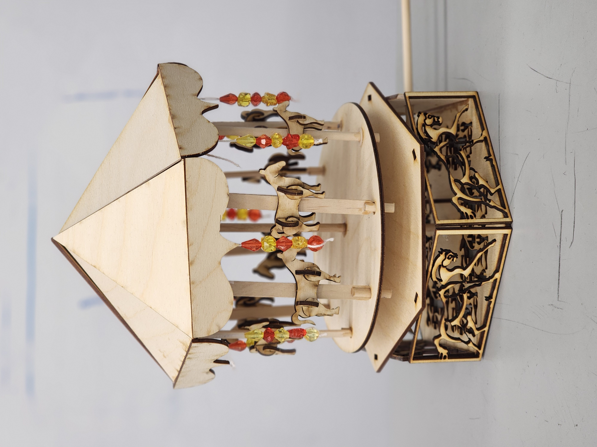

Anika Kale
Mechanical Engineering student at Olin College crafting human-centered hardware, from concept to prototype.
Design, CAD & Fabrication Projects

Custom Automotive Light Hardwiring
Hardwiring an interior ambient light system via fuse tapping, voltage step-down isolation, soldering, and chassis grounding.
Automotive Wiring
Soldering
Fuse Tapping

Chain-Driven Zoltar Sculpture
A kinetic display coordinating multi-part Onshape assemblies and multi-sprocket alignment.
Prototyping
Chain Drives

BAJA SAE Engine Splash Shield
Designing a custom fluid barrier using CAD, plasma cutting, and self-locating assembly jigs for tight vehicle clearances.
CAD Modeling
Plasma Cutting
Jigs & Fixturing

Kinetic Arctic Predator Sculpture
A motor-driven sculpture displaying a synchronized predator-prey sequence using passive linkage actuation.
Onshape
Plasma Cutting

Bevel Gear Driven Carousel
A hand-cranked physical mechanism focused on gear alignment, tolerance control, and 3D printing.
CAD Mates
Laser Cutting